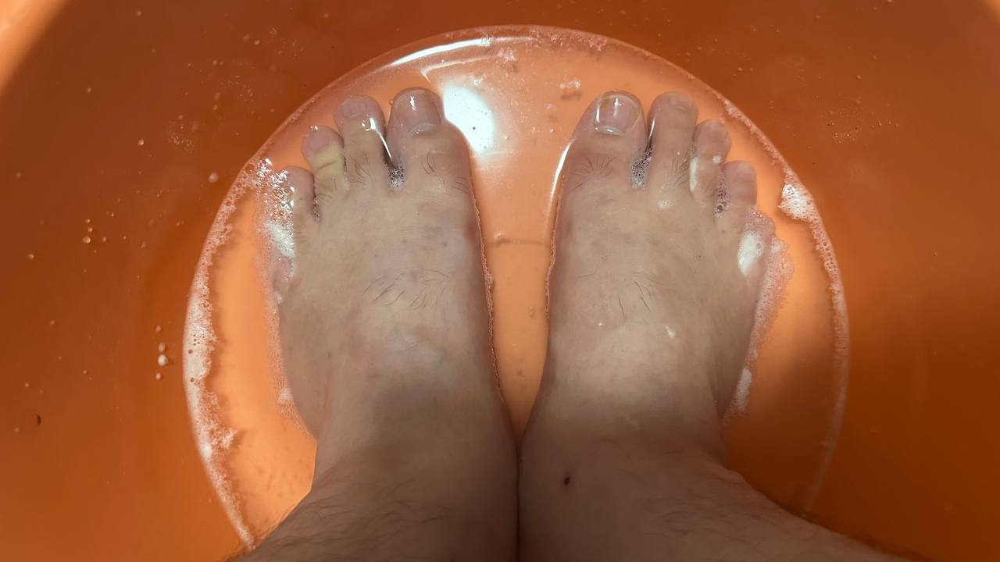

Kann Wasserstoffperoxid Fußpilz heilen | Original, von KI übersetzt
Als ich in der Mittelschule war, hatte ich Fußpilz. Manchmal waren Teile meines Fußes weiß, und die Haut löste sich ab, wodurch tote Haut zurückblieb. Es schien, als hätte mein Fuß lange geschwitzt. Wenn ich nach Hause kam, halfen meine Eltern mir, meinen Fuß zu waschen. Sie waren schockiert.
Nach dem Abitur trieb ich weniger Sport. Obwohl ich wusste, dass meine Füße normalerweise rochen, besonders im Sommer, ignorierte ich es jahrelang.
In den letzten Jahren las ich Yin Wangs Artikel über Fußpilz. Er versuchte viele Wege, und in den Kommentaren einiger Produkte sah er, wie jemand Wasserstoffperoxid zur Heilung von Fußpilz erwähnte.
Um 2023 experimentierte ich zunächst mit Wasserstoffperoxid, aber meine Anwendung war inkonstant. Ich beobachtete, wie sich Blasen auf meinen Pantoffeln bildeten. Die 3%ige Wasserstoffperoxidlösung, die ich kaufte, war preiswert und kostete etwa 30 CNY für eine 5-Liter-Flasche. Ich kaufte auch mehrere 500-ml-Flaschen, gefüllt mit Wasserstoffperoxid, die jeweils etwa 5 CNY kosteten. Allerdings benutzte ich die Lösung nur ein- oder zweimal, bevor ich die Flaschen größtenteils unbenutzt ließ.
Etwa ein Jahr später versuchte ich, die Lösung erneut zu verwenden, aber sie hatte ihre Wirksamkeit verloren; die Blasen erschienen nicht mehr auf den Pantoffeln.
Also kaufte ich eine neue Flasche Wasserstoffperoxid, und es funktionierte gut. Nachdem ich es benutzt und meinen Fuß abgerieben hatte, war der unangenehme Geruch deutlich reduziert.
Ich habe in den letzten Jahren in Guangzhou, China, gelebt. Im Sommer ist der Fußgeruch daher selbst in einem klimatisierten Raum unangenehm. Ich trage zu Hause Pantoffeln und im Büro Sandalen, sodass meine Füße normalerweise der Luft ausgesetzt sind. Es ist wirklich wichtig, saubere Füße zu haben, nicht nur für andere, sondern auch für mich selbst.
Ich begann, mit AI-Chatbots mehr über Wasserstoffperoxid zu erfahren. Es ist ein nützlicher chemischer Bestandteil. Um Wasserstoffperoxid zu sparen, begann ich, Einweg-Fußabdeckungen zu verwenden. Nachdem ich meine Füße eingeweicht hatte, verwende ich die restliche Flüssigkeit, um meine Pantoffeln und Sandalen einzuweichen.

Quelle: Selbst aufgenommen
 Quelle: Selbst aufgenommen
Für Leser können Sie die unten stehenden Substack-Artikel von Yin Wang konsultieren, um mehr zu erfahren.